ConductionIndirect_VoronoiB class
Contents
Description
This is a sub-class of the ConductionIndirect class for the implementation of the Voronoi Polyhedra B indirect heat conduction model.
This model assumes that the indirect heat conduction between two neighboring elements is restricted to the region delineated by the double pyramid whose apexes are the particles' centers and base is the Voronoi boundary plane shared by the particles' cells. For simplicity, the double pyramid is treated as a double tapered cone with the same base area A. In 2D, the Voronoi edge shared by the cells of both particles represents the diameter of the cone base.
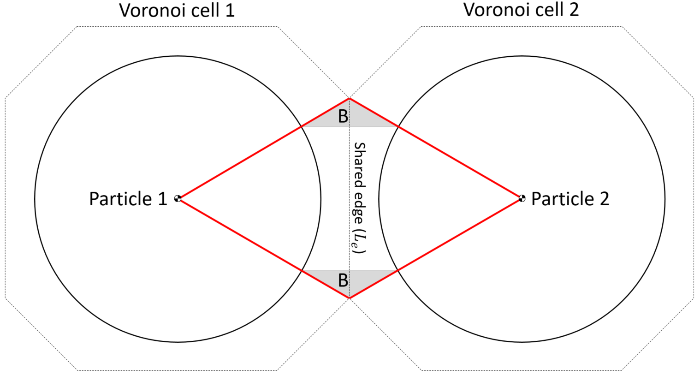
In model B, the following assumptions are made:
- Conduction in the outer region of the cone (region B) is included.
- Particles have an isothermal core of radius rc with their representative temperature (input parameter).
- Heat flow paths radiate from the cores' surfaces.
For mono-size particles, the rate of heat transfer is given by:
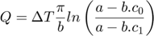
Where:
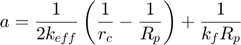
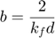
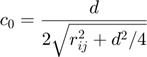
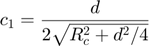
For multi-size particles, the rate of heat transfer is given by:
For 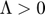:
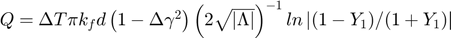
For 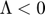:
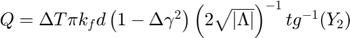
For 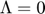:
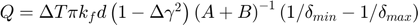
Where:
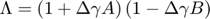
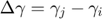
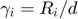
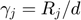
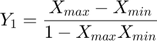
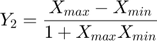
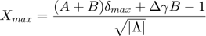
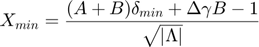
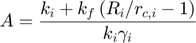
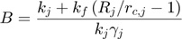
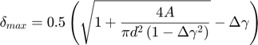
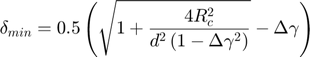
In both cases, the heat transfer radius 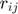 depends on the shape and size of the Voronoi cells. There are 3 methods to obtain its value:
- 1. Voronoi Diagram:
The Voronoi diagram is built in a given frequency, and the heat transfer radius is related to the volume V and diameter Le of the double tapered cone as:
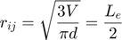
- 2. Local Porosity:
It has been shown that the average size of the Voronoi cells is related to the porosity of the medium e, in such a way that the heat transfer radius can be computed as:
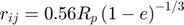
In this method, instead of building the Voronoi diagram, the local porosity around each particle, considering its immediate neighbors, is computed and updated in a given frequency.
- 3. Global Porosity:
In this method, the value of the average global porosity is directly provided and kept constant, or it is automatically computed by assuming that the total volume of the domain is obtained by the applying the alpha-shape method over all particles.
Notation:
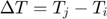: Temperature difference between elements i and j
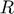: Radius of particles i and j (or p when mono-size)
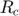: Contact radius
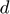: Distance between the center of the particles
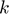: Thermal conductivity of particles i and j, and interstitial fluid f
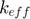: Effective contact conductivity
References:
- L. Chen, C. Wang, M. Moscardini, M. Kamlah and S. Liu. A DEM-based heat transfer model for the evaluation of effective thermal conductivity of packed beds filled with stagnant fluid: Thermal contact theory and numerical simulation, Int. J. Heat Mass Transf., 132:331-346, 2019 (extension to multi-sized particles)
- R.Y. Yang, R.P. Zou and A.B. Yu. Voronoi tessellation of the packing of fine uniform spheres, Phys. Rev. E, 65:041302, 2012 (relationship between Voronoi diagram and porosity)
classdef ConductionIndirect_VoronoiB < ConductionIndirect
Public properties
properties (SetAccess = public, GetAccess = public)
method uint8 = uint8.empty; % flag for type of method to compute voronoi cells size
coeff double = double.empty; % heat transfer coefficient
core double = double.empty; % radius of isothermal core (ratio of particle radius)
end
Constructor method
methods
function this = ConductionIndirect_VoronoiB()
this = this@ConductionIndirect(ConductionIndirect.VORONOI_B);
this = this.setDefaultProps();
end
end
Public methods: implementation of super-class declarations
methods
%------------------------------------------------------------------
function this = setDefaultProps(this)
this.core = 0.5;
end
%------------------------------------------------------------------
function this = setFixParams(this,int,drv)
this.coeff = this.heatTransCoeff(int,drv);
end
%------------------------------------------------------------------
function this = setCteParams(this,~,~)
end
%------------------------------------------------------------------
function this = evalHeatRate(this,int,drv)
if (isempty(this.coeff))
h = this.heatTransCoeff(int,drv);
else
h = this.coeff;
end
this.total_hrate = h * (int.elem2.temperature-int.elem1.temperature);
end
end
Public methods: sub-class specifics
methods
%------------------------------------------------------------------
function h = heatTransCoeff(this,int,drv)
if (int.kinemat.gen_type == int.kinemat.PARTICLE_PARTICLE)
if (int.elem1.radius == int.elem2.radius)
h = this.evalExpressionMonosize(int,drv);
else
h = this.evalExpressionMultisize(int,drv);
end
else
% Assumption: walls are always considered as lines
h = this.evalExpressionWall(int,drv);
end
end
%------------------------------------------------------------------
function h = evalExpressionWall(this,int,drv)
% Needed properties
Rp = int.elem1.radius;
Rc = int.kinemat.contact_radius;
d = int.kinemat.distc;
kp = int.elem1.material.conduct;
kf = drv.fluid.conduct;
rc = this.core * Rp;
% Parameters
rij = this.getConductRadius(int,drv,Rp);
if (rij <= Rc || isinf(rij))
h = 0;
return;
end
a = (1/rc - 1/Rp)/(2*kp) + 1/(2*kf*Rp);
b = 1/(2*kf*d);
c0 = d / sqrt(rij^2 + d^2);
c1 = d / sqrt(Rc^2 + d^2);
% Heat transfer coeff
ln = log((a-b*c0)/(a-b*c1));
if isreal(ln)
h = pi * ln / b;
else
h = pi * real(ln) / b;
end
end
%------------------------------------------------------------------
function h = evalExpressionMonosize(this,int,drv)
% Needed properties
Rp = int.elem1.radius;
Rc = int.kinemat.contact_radius;
D = int.kinemat.distc/2;
ks = int.eff_conduct;
kf = drv.fluid.conduct;
rc = this.core * Rp;
% Parameters
rij = this.getConductRadius(int,drv,Rp);
if (rij <= Rc || isinf(rij))
h = 0;
return;
end
a = (1/rc - 1/Rp)/(2*ks) + 1/(kf*Rp);
b = 1/(kf*D);
c0 = D / sqrt(rij^2 + D^2);
c1 = D / sqrt(Rc^2 + D^2);
% Heat transfer coeff
ln = log((a-b*c0)/(a-b*c1));
if isreal(ln)
h = pi * ln / b;
else
h = pi * real(ln) / b;
end
end
%------------------------------------------------------------------
function h = evalExpressionMultisize(this,int,drv)
% Needed properties
R1 = int.elem1.radius;
R2 = int.elem2.radius;
Rc = int.kinemat.contact_radius;
d = int.kinemat.distc;
k1 = int.elem1.material.conduct;
k2 = int.elem2.material.conduct;
kf = drv.fluid.conduct;
c = this.core;
% Parameters
rij = this.getConductRadius(int,drv,(R1+R2)/2); % Assumption: average radius
if (rij <= Rc)
h = 0;
return;
end
An = pi * rij^2;
gamma1 = R1/d;
gamma2 = R2/d;
dgamma = gamma2 - gamma1;
A = (k1+kf*(1/c-1))/(k1*gamma1);
B = (k2+kf*(1/c-1))/(k2*gamma2);
lambda = (1+dgamma*A)*(1-dgamma*B);
delmax = 0.5 * (sqrt((4*An)/(pi*d^2*(1-dgamma^2))+1) - dgamma);
delmin = 0.5 * (sqrt((4*Rc^2)/(d^2*(1-dgamma^2))+1) - dgamma);
Xmax = ((A+B)*delmax + dgamma*B - 1) / sqrt(abs(lambda));
Xmin = ((A+B)*delmin + dgamma*B - 1) / sqrt(abs(lambda));
Y1 = (Xmax-Xmin) / (1-Xmax*Xmin);
Y2 = (Xmax-Xmin) / (1+Xmax*Xmin);
% Heat transfer coeff
if (lambda > 0)
h = pi * kf * d * (1-dgamma^2) * log(abs((1-Y1)/(1+Y1))) / (2*sqrt(abs(lambda)));
elseif (lambda < 0)
h = pi * kf * d * (1-dgamma^2) * atan(Y2) / (2*sqrt(abs(lambda)));
else
h = pi * kf * d * (1-dgamma^2) * (1/delmin-1/delmax) / (A+B);
end
end
%------------------------------------------------------------------
function r = getConductRadius(this,int,drv,Rp)
if (this.method == this.VORONOI_DIAGRAM)
r = int.kinemat.vedge/2;
else
if (this.method == this.POROSITY_GLOBAL)
por = drv.porosity;
elseif (this.method == this.POROSITY_LOCAL && int.kinemat.gen_type == int.kinemat.PARTICLE_PARTICLE)
por = (int.elem1.porosity+int.elem2.porosity)/2; % Assumption: average porosity
else
por = int.elem1.porosity; % Assumption: particle porosity only
end
r = 0.56 * Rp * (1-por)^(-1/3);
end
end
end
end